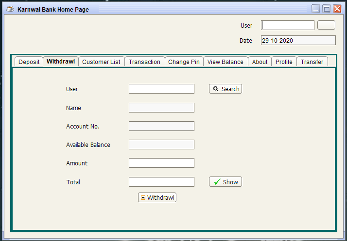
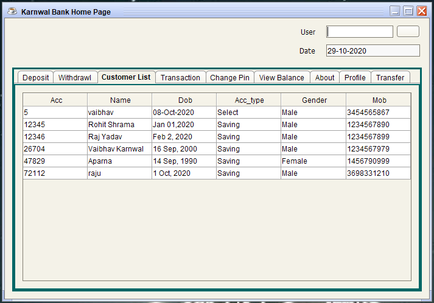
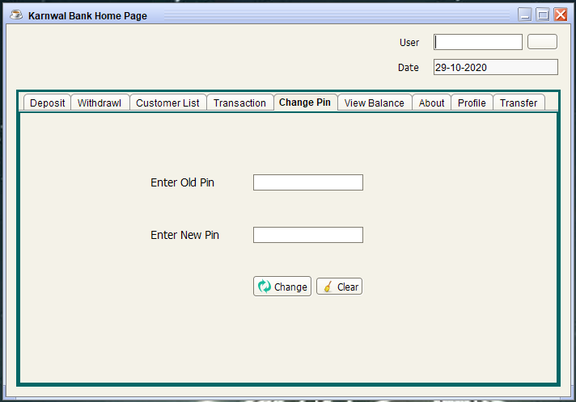
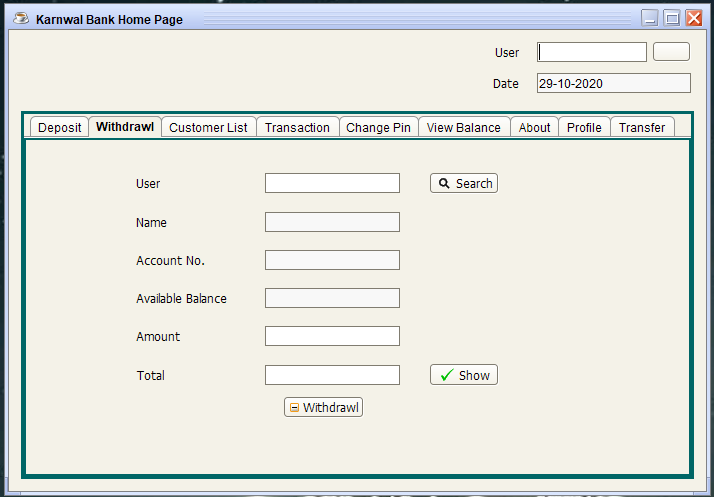
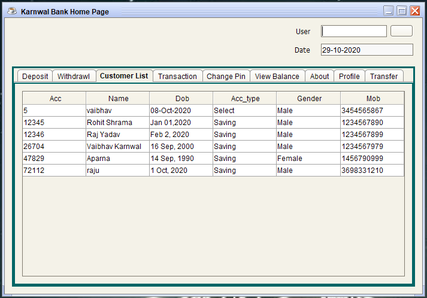
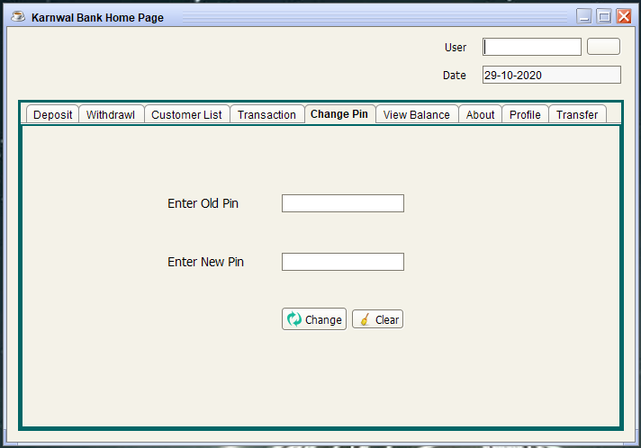

Address
Moh-Jatan B-2 Near
BJP Office
H.No 22
Bijnor, Uttar Pradesh,
246701
I have made a Bank Management System which is based on GUI. It is an application for maintaining a persons account in a bank. This system provides the access to the customer to create an account, deposit/withdraw/transfer the cash from his account, also to view reports of all accounts present.
The main objective of creating a GUI-based bank management system is to maintain the bank account records, transaction records of the customers. Easy to track all the banking activity of a centralized system.
This Project contains all the basic activities of the bank. there is 2 main actor.
Admin: Following activity performs by admin or bank user.
When a new user will be added under any bank. A unique account number will generate automatically for the customer that the user will use this during the transactions.
User: User can perform following crud operation.
Bank is the place where customers feel the sense of safety for their property. In the bank, customers deposit and withdraw their money. Transaction of money also is a part where customer takes shelter of the bank. Now to keep the belief and trust of customers, there is the positive need for management of the bank, which can handle all this with comfort and ease. Smooth and efficient management affects the satisfaction of the customers and staff members, indirectly. And of course, it encourages management committee in taking some needed decision for future enhancement of the bank.
Now a days, managing a bank is tedious job upto certain limit. So software that reduces the work is essential. Also today’s world is a genuine computer world and is getting faster and faster day-by-day. Thus, considering above necessities, the software for bank management has became necessary which would be useful in managing the bank more efficiently.
. Our software will perform and fulfill all the tasks that any customer would desire.
. Our motto is to develop a software program for managing the entire bank process related to customer accounts, employee accounts and to keep each every track about their property and their various transaction processes efficiently.
. Hereby, our main objective is the customer’s satisfaction considering today’s faster world.
In the recent years, computers are included in almost all kind of works and jobs everyone come across in the routine. The availability of the software’s for almost every process or every system has taken the world in its top-gear and fastens the day-to-day life.
So, we have tried our best to develop the software program for the Bank Management System where all the tasks to manage the bank system are performed easily and efficiently. It manages all the transactions like new account entry, deposit as well as withdraw entry, transaction of money for various processes, loan entry, managing bills cash or cheque, etc.
Thus, above features of this software will save transaction time and therefore increase the efficiency of the system.
For your better understanding, I have divided the code into the following functions.
Also, to create a GUI, I will be using Swing. Swing is a library or a set of program components used to create graphical user interface components such as scroll bars, buttons, dialog boxes, etc.
 




Moh-Jatan B-2 Near
BJP Office
H.No 22
Bijnor, Uttar Pradesh,
246701
8755389831
shagunagrawal0123@gmail.com
Copyright @ 2021 Shagun-Agrawal-Creation.com All Right Reserved.